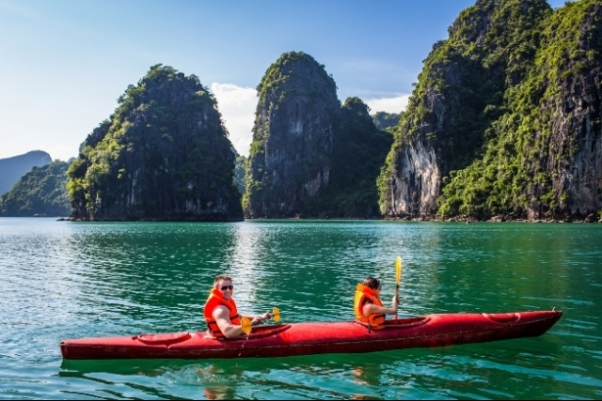
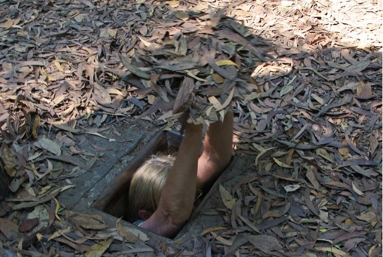
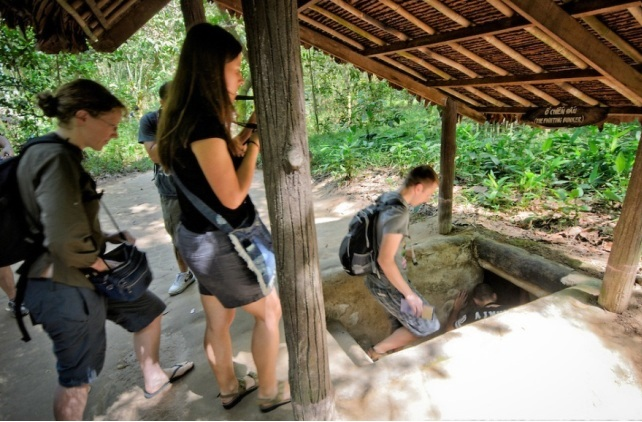
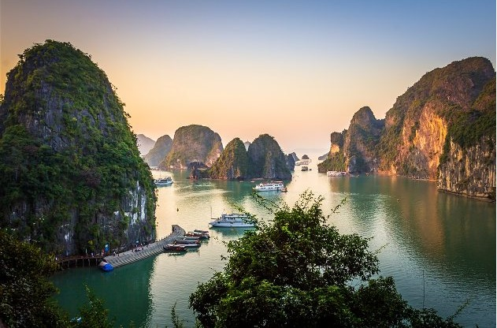
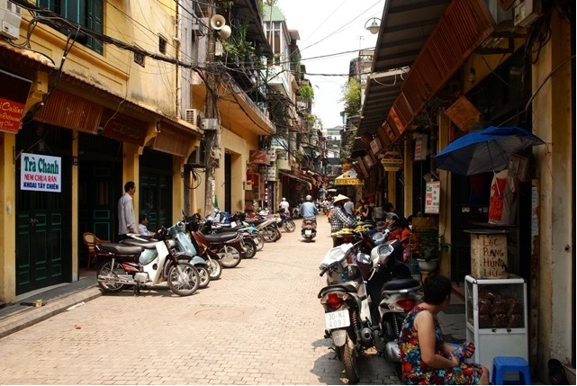
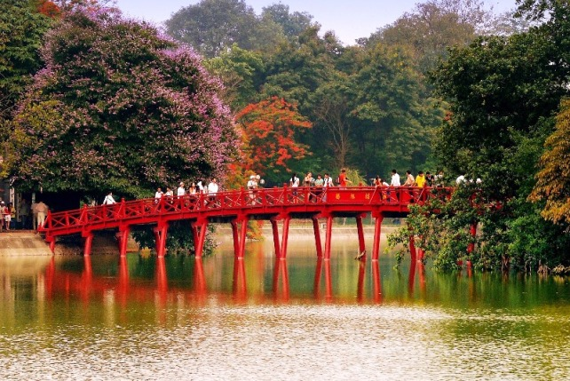

Whatever you are looking for in Vietnam we can help you find it and whatever itinerary you may have in mind we can help you shape it. Our mission is to create exceptional holidays for unforgettable experience, lifetime memories!


Hanoi, Halong Bay, Hoi An, Ho Chi Minh City, Mekong Delta
Visit the best of Vietnam with this 9 day Vietnam tour including accommodation, meals, Halong Bay cruise, professional guides, in-depth sightseeing and more.. This tour can be reversed starting from Ho Chi Minh City.
Visit the best of Vietnam with this 9 day Vietnam tour including accommodation, meals, Halong Bay cruise, professional guides, in-depth sightseeing and more.. This tour can be reversed starting from Ho Chi Minh City.
- Overview
- 9 Day Vietnam Tour Itinerary
- Prices and Inclusions
- Gallery
Vietnam is a great glory destination with something for everyone. A well balanced program visiting the highlights of Vietnam and some lesser visited spots in-between. This 9 Day Vietnam tour traverses the country from North to South starting in Hanoi. Discover the charms of Hanoi, kayak or cruise around Halong Bay, enjoy picturesque Hoi An and end your journey in Ho Chi Minh City with a visit to the famous Cu Chi Tunnels and an interesting side trip to the lush Mekong Delta, where scenes of local lifestyles can be observed with plenty of opportunity for interaction with the people.
* This tour can be reversed starting from Ho Chi Minh City and ending in Hanoi depending on your flight schedule.
Duration:9 days / 8 nights
Type of tour: Private tour (shared Halong Bay Cruise)
Departure:Daily from Ha Noi or Ho Chi Minh
Theme:Traditional culture
Suitable:Travel with friends, Family, Solo traveler
9 DAY VIETNAM TOUR ITINERARY
Destination: Hanoi - Halong Bay - Hoi An - Ho Chi Minh City - Cu Chi Tunnels - Mekong Delta
DAY 1: ARRIVE IN HANOI
Meals included: N/A I Accommodation: Hotel in Hanoi
Arrive in Hanoi (Noi Bai airport), you will be welcomed and transferred to your hotel in downtown Hanoi for check-in (hotel rooms are available for mid-afternoon check-in). The rest of the day is at your leisure to explore the tree-lined boulevards, French Indochinese architecture and tranquil lakes of this unique city.
Stay overnight in Hanoi.
DAY 2: HANOI CITY TOUR (B, L)
Meals included: Breakfast, Lunch I Accommodation: Hotel in Hanoi
Our guide & driver will pick you up at your hotel around 08h00 for a full day tour of Hanoi.
08h30: Visit the sixth century Tran Quoc Buddhist Pagoda (one of the oldest in Vietnam) located on the picturesque West Lake.
09h00: Continue to visit the One Pillar Pagoda, founded by King Ly Thai To in 1049. This structure is one of Vietnam’s most iconic temples. Close by is the mausoleum of the historic figure and father of modern Vietnam, Ho Chi Minh Mausoleum (viewed from outside; closed on Monday, Friday and during the months of September and October) and the former presidents house on stilts where he lived from 1958 to 1969, his former home illustrates the modesty of this Vietnamese revolutionary.
10h15: Visit the Literature Temple and Quoc Tu Giam – Vietnam’s first university constructed in 1070, it’s gardens and well-preserved architecture offers a relaxing glimpse into Vietnam’s past.
11h15: Visit the Hoa Lo Prison also known as the Hanoi Hilton. Built by the French colonial government in the late 19th century, Hoa Lo Prison Museum was originally used to harbor Vietnamese revolutionaries and any dissidents of the French rule.
12h15: Lunch will be had in one of the city’s finest restaurants with local Vietnamese traditional cuisines.
14h00: After lunch and break continue the city tour to Museum of Ethnology, a must for museum fans and history lovers. Hanoi's Vietnam Museum of Ethnology houses the extensive national collection and tells the story of Vietnam's diverse cultures in a series of excellently well-curated exhibits. Alternative you can visit the Fine Art Museum or Women’s Museum instead.
15h00: Head to Hoan Kiem Lake (Restored Sword Lake) and visit Ngoc Son Temple or Jade Mountain Temple, one of the most beautiful and religious site in the capital then a walking tour into the hidden alleys of Hanoi Old Quarter.
Finish the day with a Water Puppet show, a uniquely northern Vietnamese art form depicting scenes from rural life and episodes of national history.
Optional: If you are not interested in watching Water Puppet Show you can enjoy one hour relaxing Xichlo (rickshaw) trip around Hanoi’s Old Quarter also known as the ’36 streets’. This bustling area of narrow streets and alleys is home to literally thousands of small businesses and shopkeepers. It’s a great place to explore with plenty of photo opportunities all around you.
17h00: Return to your hotel. Evening is at your leisure.
Stay overnight in Hanoi.
DAY 3: HANOI – HALONG BAY, THE WORLD HERITAGE – OVERNIGHT ON BOARD (B, L, D)
Meals included: Breakfast, Lunch, Dinner I Accommodation: Overnight on boat
Halong Bay is listed by UNESCO as a World Natural Heritage and voted as a Wonder of Nature by the New7Wonders Foundation. You will have a night staying in this world famous bay.
08h00: You will be picked up from your hotel lobby for a 3hr 30min drive to Halong Bay including a 20-minutes stop on the way. Arrive at your jetty in Halong City towards noon and proceed with check-in formalities. After your welcome onboard, a lunch will be served while cruising towards the bay itself passing by impressive rock formations with unusual names and shapes.
In the afternoon, enjoy some visits and/or activities (depending on each boat’s itinerary - you may visit a beautiful cave, have some swimming at a beautiful beach or do kayaking) or just spend some time relaxing on board. Towards the end of the day the boat sets anchor for the night among the karst formations. Dinner is served on board.
Stay overnight on board.
Note: Our tour guide will not accompany aboard the cruise in Halong Bay. Resident English speaking guide on board is available
DAY 4: HALONG BAY – HANOI – FLIGHT TO DA NANG – HOI AN (B, L)
Meals included: Breakfast, Brunch | Accommodation: Hotel in Hoi An
Rising to the sound of lapping bay waters, we have time for an early morning dip followed by breakfast. Sitting on the upper deck, you can relax while taking in the breath-taking beauty of the rocky islands rising from the emerald water of the bay.
On your return to Halong City enjoy a wholesome brunch as your boat wends through strange-shaped limestone rock formations. Upon disembarkation your driver will meet you for the transfer back to Hanoi
16h30 - 17h00: Arrive in Hanoi.
Transfer to Hanoi airport for short flight to Danang. Arrival and transfer to Hoi An, a major Asian trading port in the 17th and 18th centuries whose architecture and relaxed lifestyle has changed little over the years. Check in your hotel.
Stay overnight in Hoi An.
DAY 5: HOI AN FREE DAY (B)
Meals included: Breakfast | Accommodation: Hotel in Hoi An
The day is left free to relax in this beautiful area. You could take a taxi or make the easy five-kilometre bicycle ride through the rice paddies and shrimp ponds to Cua Dai beach.
Alternatively Hoi An is one of the best places to shop for souvenirs, especially if you’re looking for t-shirts, paintings or ceramics. For those interested in getting clothes tailored, this is definitely the place to shop.
Another good idea is to take a boat trip out to a village specialising in ceramics and boat-building or visit the local farm in Tra Que Village and have a local home cooked meal including a “banh xeo” a specialty savoury (optional – please contact us directly for tour options).
Stay overnight in Hoi An.
Optional Tour: We would like to introdue some tour options to explore the beauty and charm of Hoi An. You can choose one of below options:
Option 1: Discover My Son Holly Land (Half day)
My Son Sanctuary - a collection of Champa ruins nestled amongst the mountains in a geological basin of the Quang Nam province
Price from 44 USD/ person (for a group of 2 persons. The bigger the group, the bigger the saving)
Option 2: Hoi An Countryside by Jeep and Sunset Cruise on Thu Bon River (15h30-19h00)
Take a journey through picturesque countryside to reach lesser known parts of Hoi An city you will explore the local village and enjoy buffalo riding. Then cruise through the river, witness the river culture, local farming and the other daily activities of the local people. Enjoy our delicious freshly prepared foods on boat and it’s the time for paper lanterns with small lanterns inside twinkle.
Price from 67 USD/person (for a group of 2 persons. The bigger the group, the bigger the saving)
Option 3: Countryside And Cooking – Hoi An Bike Tour (8h15-16h00)
Your gentle cycle tour takes you on the short but beautiful ride through lush farm land, rice fields and small villages to Tra Que Village. Visit local villagers and see how they use their surrounding resources to craft a living using age old methods. Get on Coracle boat for a journey through the untouched waterways, fringed by river coconut palms.
At Tra Que you will enjoy the village tour to nurseries and herb gardens. Get to know the villagers’ daily working routines, like raking the ground, sowing, watering and picking greens and many more gardening activities. Relax and enjoy a traditional herbal foot massage in the garden before joining a cookery class hosted by the local family.
Price from 67 USD/person (for a group of 2 persons. The bigger the group, the bigger the saving)
Option 4: My Son Sanctuary - Countryside Vespa Tour (07h30-14h30)
Riding pillion on a classic vintage Vespa motorbike to the UNESCO site of My Son. Taking back roads and country laneways passing small villages this tour brings you closer to rural Vietnam on this journey to the ancient site of My Son.
Price from 85 USD/person (for a group of 2 persons. The bigger the group, the bigger the saving)
DAY 6: HOI AN FREE DAY (B)
Meals included: Breakfast | Accommodation: Hotel in Hoi An
Free day at leisure – continue exploring the Ancient Quarter or head to the beach/swimming pool for relaxing.
Stay overnight in Hoi An.
DAY 7: HOI AN – DANANG – FLIGHT TO HO CHI MINH CITY – CU CHI TUNNELS (B)
Meals included: Breakfast | Accommodation: Hotel in Ho Chi Minh
This morning, transfer to Danang airport (30km from Hoi An) for the short flight to dynamic Ho Chi Minh City, still called Saigon by the locals (1h20min duration). Arrival and transfer to your hotel for check-in.
In the afternoon depart for Cu Chi Tunnels, the trip will take approximately one and a half hour drive. Upon arrival, before exploring the tunnels, you will have some short introduction followed by introductory video about how the tunnels were constructed and how the people survived in the harsh conditions of the war time. Then, spend your time to explore the remaining area and tunnel systems which included the special constructed living areas with kitchens, bedrooms side by side with other martial facilities like storage, weapons factories, field hospitals, and command centers helping whoever lives inside the tunnels meet their basic needs. Besides, there are also many hidden trap doors and dangerous traps within the maze-like tunnels for security purpose during the war. Afterward, special tea and cassava (guerilla’s food during the war) will be served.
Break time for relax or time for those who want to try the real shooting gun (your own expense).
At the end of the afternoon head back to your hotel in Ho Chi Minh City. Evening is at leisure.
Stay overnight in Ho Chi Minh City.
DAY 8: HO CHI MINH CITY – MEKONG DELTA (BEN TRE) – HO CHI MINH CITY (B, L)
Meals included: Breakfast, Lunch | Accommodation: Hotel in Ho Chi Minh
Escape the city for a tour of the Mekong Delta, where you'll see what life is like beyond the urban centre of the south.
Travel to Ben Tre to discover the unique lifestyle of inhabitants living along the Mekong Delta. Board your cruise on Ben Tre River (one of the tributaries of Mekong River) before stopping at brickworks to see how bricks are made in traditional style by printing and baking. Next, visit a coconut processing workshop located along the canal. Turn on natural scissors creeks where they look smaller and smaller which will lead to a local village. Walk to a family workshop to observe sleep mats being made while enjoying some fruits and tea. Then you’ll take a motor cart or cycle under shady trees, pass by green rice fields and vegetable plains all while getting a feel for the life and tropical culture from Peasants.
Lunch is served at a riverside restaurant.
In the afternoon, you’ll take a row-boat along water palm creek and then boat back to Hung Vuong Pier, where your transport is waiting back to Ho Chi Minh City. Arrive at your hotel around 17h00. Evening is at leisure.
Stay overnight in Ho Chi Minh City.
DAY 9: HO CHI MINH CITY DEPARTURE (B)
Meals included: Breakfast | Accommodation: N/A
The day is at your leisure for last minute sight-seeing or shopping until your transfer to Ho Chi Minh City airport for your onward flight.
If hotel and other travel arrangements are required, please contact us.
TOUR PRICES: Available upon Request
Rates vary frequently. Please contact us to get the best possible price based upon your travel period, your group size and specific touring needs.
*** Price shown is "from" price and is on a shared basis of 3 star accommodation for a group of 2 people.
Our services include:
– Full transportation by private air conditioned vehicle as tour program indicated (including airport pick up & see off).
– All entrance fees as mentioned in the program.
– Boat trips as stated in above sights (shared Halong Bay cruise).
– All excursion trips and activities as tour program indicated.
– Local English-speaking guides (for other languages supplements apply).
– Meals as stated in the program (B=Breakfast, L=Lunch, D=Dinner).
– Accommodation in shared twin or double bedded room with air-conditioner and private bathroom (6 nights at hotel and 1 night on boat in Halong Bay).
– Mineral water served on trip (2 bottles of 500ml/person/day).
Our services exclude:
– Visa for Vietnam.
– All air tickets not mentioned in the program and above quotation.
– Optional tours.
– Surcharges for other language guides.
– Personal travel insurance.
– Personal expenditure, such as drinks, souvenirs, laundry, camera fees, communications, postage, gratuities etc…
– Meals and services other than mentioned in the program.
– Drinks with meals.
– Early check-in and late check-out at hotels, if not mentioned in the program.
NOTES ON OUR PRICES:
– Price shown is based on private tour and two people travelling together and sharing a room at 3 star accommodation. Single supplement applies to solo travellers who occupy a single room.
List of 3 star accommodation included in the price:
– Hanoi: Imperial Hanoi Hotel, Deluxe room with City View;
– Halong Bay: Calypso Cruiser (12 cabins), Deluxe cabin with Sea View;
– Hoi An: Eem Hotel Hoi An, Deluxe room with City View or Hoian Central Hotel, Deluxe room with City View
– Ho Chi Minh City: Cititel Central Saigon, Deluxe room with City View
– Prices may vary according to your travel time and are higher in the high season, e.g. Christmas period (Dec 24-26), New Year period (Dec 31-Jan 02).
– For additional hotel night cost to the packages, please contact us for the rates.
– Listed hotels/cruise subject to change to others of similar standard if fully booked.
– Upgrades available to stay at 4 or 5-star hotels, please contact us for more details. Additional costs will be applied.
– Domestic flight of Hanoi-Danang and Danang-Saigon can be arranged upon request (subject to availability at the time of final confirmation).
– This private escorted tour is customized for you, your family or your friends exclusively. No other travelers will join in your group.
– This tour package can be fully customizable to fit your travel plan. You can also disregard full package tours and choose whatever travel items you need or a mix of private and group tours to minimize the cost. We can quote the tours you really want. Usually travel insurance is not covered in our quotations.
– Child definition: from age of 3 to 9 Years (usually enjoying 10%-20% discount. Contact us for the actual discount for your case). 10 Years old and above will be charged as Adult Price.
– All tours & transfers are all based in English Speaking local guides. For other languages, please contact us for new quotations.
– Itinerary Change to the confirmed itinerary may happen because of traffic, weather, or any other conditions not under our control such as war, strike, fire, acts of government, riot, etc. We will do our best to make sure that all the travel will be similar. Go Viet Travel can substitute the itinerary upon your agreement.
– Transportation and Restaurants: The cars, vans or coaches for the land transportation should be in good shape with air conditioner. All restaurants should be tidy and clean.









